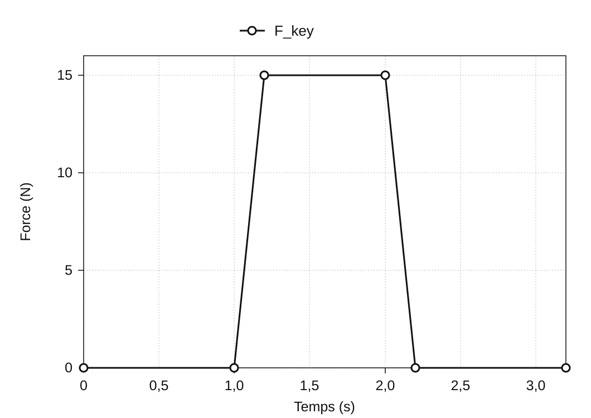
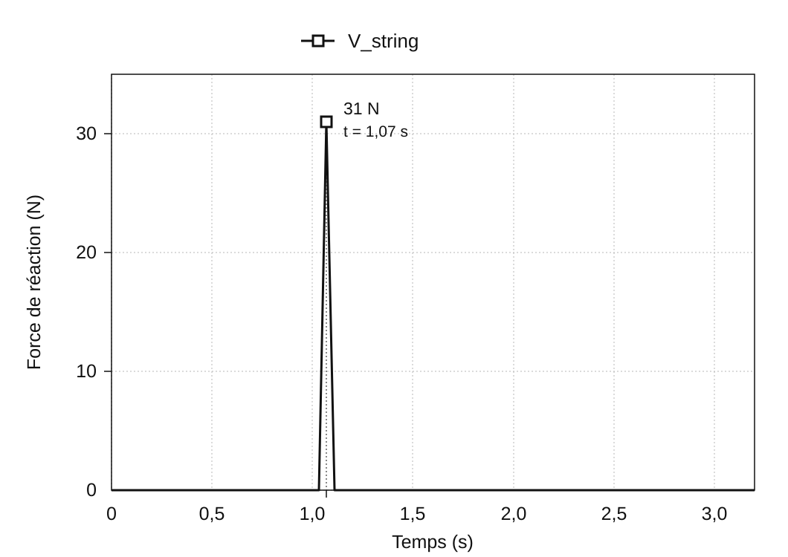

Analyse du mouvement de la mécanique de piano
janvier 2020
Présentation
La mécanique d’un piano à queue est le système de leviers qui transmet l’enfoncement d’une touche à un marteau, lequel se lève pour frapper une corde et la mettre en vibration. Ce projet a recréé cette mécanique sous forme de modèle 3D dans SolidWorks* et utilisé l’analyse du mouvement pour étudier comment l’action sur la touche se traduit en vitesse du marteau et en force de réaction au niveau de la corde.
La mécanique a été modélisée de toutes pièces à partir d’images de référence, puis étudiée selon deux relations : entre la vitesse descendante de la touche et la vitesse ascendante du marteau, et entre la force appliquée à la touche et la force de réaction au niveau de la corde. Les résultats de simulation ont été comparés aux valeurs théoriques calculées à partir des dimensions du modèle et de la position de ses pivots, afin de vérifier la transmission du mouvement et des forces.
* SolidWorks est un logiciel de CAO 3D proposant des outils d’analyse structurelle des pièces et d’analyse du mouvement des mécanismes.


Construire un modèle de mécanique de piano pour l’analyse
Comment l’enfoncement d’une touche fait frapper le marteau
La mécanique de piano convertit le mouvement descendant d’une touche en mouvement ascendant d’un marteau. L’enfoncement de la touche met en mouvement le pilote, le chevalet, le bâton d’échappement et le levier de répétition, qui font monter le marteau jusqu’à la corde. Le pianiste n’effectue qu’un geste, mais plusieurs pièces de la mécanique tournent autour de pivots distincts et transmettent le mouvement par contact.
Le modèle 3D comprend la touche, le marteau, le bâton d’échappement, le chevalet, le levier de répétition, le pilote, l’étouffoir, son levier et le fil, ainsi que leur bâti de support. Modéliser le mouvement exigeait de définir le pivot de chaque pièce et ses points de contact avec les autres.
Construire le modèle 3D à partir d’un dessin en coupe
Chaque pièce a été modélisée de toutes pièces en 3D en retraçant son contour sur un dessin en coupe de la mécanique. Les pièces ont ensuite été assemblées avec des liaisons fixes et des liaisons pivot correspondant au mécanisme physique. La définition de ces relations a transformé la géométrie en un modèle d’analyse capable de bouger sous l’effet des forces appliquées.


Vérifier les degrés de liberté de l’assemblage
L’assemblage comporte neuf pièces mobiles, hors bâti fixe, soit 54 degrés de liberté avant application des contraintes. Fixer le pilote et le fil à d’autres pièces en supprime 12. Les liaisons pivot des sept pièces restantes en suppriment 35 autres, laissant 7 degrés de liberté à l’assemblage CAO :
54 − 12 − 35 = 7
Le diagnostic des contraintes de SolidWorks indiquait lui aussi 7 degrés de liberté estimés, 7 degrés de liberté réels et 0 contrainte redondante. Cela confirmait que les pièces et les contraintes définies pour ce projet avaient été assemblées comme prévu ; ce résultat n’établit pas le nombre de degrés de liberté de toute mécanique de piano physique.

Lire les indications de la figure en français
Repères : key = touche ; hammer = marteau ; jack = bâton d’échappement ; wippen = chevalet ; repetition lever = levier de répétition ; capstan = pilote ; damper = étouffoir ; damper lever = levier d’étouffoir ; wire = fil ; frame = bâti. « DOF » signifie degrés de liberté.
Le diagnostic affiche : 9 pièces mobiles, soit 54 degrés de liberté ; 7 liaisons pivot en suppriment 35 et 2 liaisons fixes en suppriment 12. Total estimé : 7 ; total réel : 7 ; contraintes redondantes : 0.
Deux analyses de l’action sur la touche
Le modèle a fait l’objet de deux analyses distinctes. L’analyse 1 comparait la vitesse de la touche à celle du marteau. L’analyse 2 comparait la force appliquée à la touche à la force de réaction au niveau de la corde. Séparer ces relations entrée-sortie facilitait l’étude de cette chaîne complexe de liaisons à l’aide de rapports géométriques de vitesses et de l’équilibre des leviers.
Pour établir une comparaison, la mécanique a été simplifiée en éléments en rotation et analysée théoriquement. Une concordance entre les valeurs théoriques et simulées indiquerait que le mouvement du modèle était cohérent avec les dimensions et les contraintes spécifiées.

Lire les indications de la figure en français
Analyse 1 : relation entre les vitesses linéaires de la touche (vkey, vers le bas) et du marteau (vhammer, vers le haut). Analyse 2 : relation entre la force sur la touche (Fkey) et la force de réaction au niveau de la corde (Vstring).
Analyse 1 : de la vitesse de la touche à celle du marteau
Pour calculer les vitesses, la mécanique a été simplifiée en trois solides indéformables : la touche, un mécanisme intermédiaire centré sur le chevalet et le marteau. Considérer le mouvement comme une succession de contacts de ① à ③ permettait d’analyser la transmission en trois étapes de rotation.

Tous les points d’un solide indéformable ont la même vitesse angulaire. Si r est la distance au pivot et v la vitesse linéaire au point considéré, alors v = ωr. En supposant que la vitesse se transmet sans perte entre les solides à chaque point de contact, on obtient la vitesse du marteau en multipliant les rapports des rayons de sortie et d’entrée des trois étapes, puis en multipliant ce produit par la vitesse de la touche.
vhammer = (r1′ r2′ r3′ / r1 r2 r3) vkey

Conditions d’entrée et résultats
Dans SolidWorks Motion Analysis, une force descendante de 5 N a été appliquée à l’extrémité de la touche. Les vitesses linéaires de cette extrémité et du marteau ont été enregistrées. Juste après le début de l’application de la force, leurs vitesses maximales étaient respectivement de 1 027 mm/s et de 4 284 mm/s, soit un rapport simulé de la vitesse du marteau à celle de la touche d’environ 4,17.

Lire les indications de la figure en français
Les deux graphiques représentent la vitesse en millimètres par seconde en fonction du temps en secondes. vkey désigne la vitesse de la touche, dont le maximum est de 1 027 mm/s ; vhammer désigne celle du marteau, dont le maximum est de 4 284 mm/s. Cette figure provient de la présentation originale en anglais.
| Grandeur et méthode | Vitesse |
|---|---|
| Touche (simulation) | 1 027 mm/s |
| Marteau (théorie) | 4 614 mm/s |
| Marteau (simulation) | 4 284 mm/s |
Comparaison avec la théorie
Les rayons mesurés étaient r1 = 200 mm, r1′ = 88 mm, r2 = 53 mm, r2′ = 78 mm, r3 = 16 mm et r3′ = 111 mm. Ces valeurs donnent un rapport idéalisé des vitesses d’environ 4,49. Pour une vitesse de touche de 1 027 mm/s, la vitesse prévue du marteau est de 4 614 mm/s.

La vitesse simulée du marteau, 4 284 mm/s, était inférieure d’environ 7 % à la valeur théorique, tout en présentant un degré d’amplification comparable. Le calcul théorique utilise trois solides indéformables idéalisés, tandis que la simulation représente les pièces individuellement. L’écart numérique ne suffit pas à en établir la cause.
Analyse 2 : de la force sur la touche à la réaction au niveau de la corde
Dans la seconde analyse, une force descendante de 15 N a été appliquée à la surface de la touche, et la force de réaction au niveau de la corde a été enregistrée lors de l’impact. La force sur la touche, Fkey, commençait à augmenter à 1,0 seconde et atteignait 15 N. La force de réaction, Vstring, atteignait un pic de 31 N au moment de la frappe.


Un calcul simplifié d’équilibre des leviers a été effectué pour comparaison, à partir des longueurs des bras de levier du côté de la touche et du marteau.
Vstring = (15 × 195) / 94 = 31.1 N
Avec des bras de levier de 195 mm du côté de l’entrée et de 94 mm du côté de la corde, le calcul d’équilibre statique donne une valeur de comparaison de 31,1 N. Celle-ci dépasse de 0,1 N le pic simulé de 31 N. Les conditions permettant d’appliquer ce calcul statique au pic instantané de force de réaction lors de l’impact restent à confirmer. Dans la formule, string désigne la corde.

Lire les indications de la figure en français
Fkey est la force appliquée à la touche ; Vstring est la force de réaction au niveau de la corde. Les bras de levier indiqués sont dk = 195 mm du côté de la touche et dh = 94 mm du côté du marteau.
Comparer simulation et théorie
Résultats des deux comparaisons
Dans l’analyse 1, la vitesse théorique du marteau était de 4 614 mm/s, contre 4 284 mm/s dans la simulation. Dans l’analyse 2, la valeur de comparaison issue de l’équilibre statique des leviers était de 31,1 N, contre un pic simulé de 31 N. Les deux comparaisons ont montré une concordance étroite entre le modèle 3D et les calculs théoriques.
Interpréter les écarts
Le calcul théorique réduit la mécanique à trois solides indéformables et suppose une transmission du mouvement et des forces sans perte à leurs points de contact. La simulation représente au contraire les pièces individuellement. Ces différences de représentation comptent pour interpréter les résultats, mais attribuer l’écart résiduel à des pertes d’énergie ou à la déformation des matériaux exige de confirmer les paramètres de la simulation.
Conclusion
La simulation 3D concordait étroitement avec les comparaisons théoriques pour la vitesse du marteau et la force de réaction au niveau de la corde. Dans le cadre de ces comparaisons, le modèle construit à partir d’un dessin en coupe reproduisait la transmission du mouvement et des forces attendue pour la géométrie et les contraintes spécifiées.
Le projet reliait plusieurs étapes de modélisation : interpréter un dessin en coupe, traduire les relations entre pièces en contraintes de CAO et simplifier l’assemblage en un modèle mécanique adapté à chaque analyse.